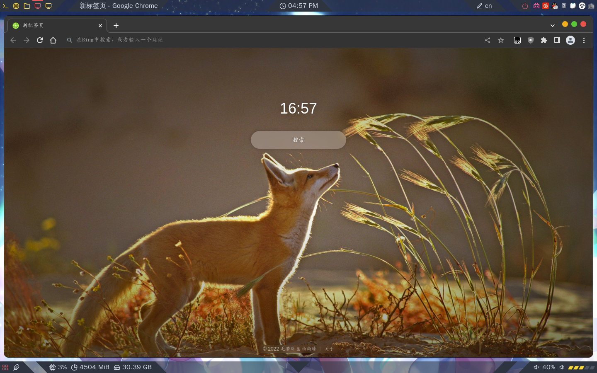

我的ArchLinux的配置
Table of Contents
1. 我的ArchLinux的配置
1.1. 软件包
1.1.1. 图形界面
注：我现在不再使用i3wm，而是dwm，关于i3部分的内容仅供参考
我使用 i3-wm + kde软件 的组合形式。 软件列表如下
| 软件 | 作用 |
|---|---|
| xorg | 最基本的图形界面服务 |
| sddm | 登录程序 |
| i3-gaps | 自带窗口空格支持 |
| i3blocks | |
| i3lock | 锁屏 |
| i3status | 状态栏 |
| polybar | 状态栏 |
| feh | 壁纸 |
| picom | X合成器 |
| rofi | 应用启动器 |
| qt5ct | 控制kde程序的主题 |
| dolphin | KDE文件管理器 |
| konsole | KDE终端 |
| ark | KDE解压软件 |
| spectacle | 截图 |
| gwenview | 图片查看 |
| kdeconnect | 工具 |
| kvantum | 主题使用 |
| fcitx-im | 输入法 |
| fcitx-configtool | 配置程序 |
1.1.2. 我的工具
我安装的工具程序：
| 程序 | 作用 |
|---|---|
| iwd | 联网 |
| dhcpcd | DNS服务 |
| zsh | 日常使用的SHELL |
| fish | 备用SHELL |
| git | 开发必备工具 |
| gcc | 编译器 |
| clang | 编译器 |
| gdb | 调试工具 |
| cmake | 工具 |
| ctags | |
| nodejs | 使用Spacevim |
| npm | 使用Spacevim |
| yarn | 使用Spacevim |
| python3 | |
| python2 | |
| vim | 编辑器 |
| neovim | 编辑器 |
| tree | 以树状图查看文件 |
| lsd | 同ls，但是有类型图标 |
| openssh | |
| sshfs | |
| gnupg | |
| man | 手册页 |
| ranger | 文件查看器 |
| grub-customizer | grub配置程序 |
| gparted | 分区 |
| filelight | 文件大小占比查看（以扇形图表示文件大小占比） |
| packagekit-qt5 | |
| flatpak | |
| fwupd | |
| vittualbox | 虚拟机 |
| neofetch | 查看系统信息 |
| translate-shell | 在终端的翻译程序 |
| alacritty | 终端 |
| zellij | 功能同tmux,终端分屏 |
| playerctl | 媒体播放管理器 |
| ntfs-3g | 支持挂载ntfs |
| scanmen | 终端的更改内存软件 |
| gameconqueror | 基于scanmen的GUI软件 |
| adb | |
| fortune-mod | |
| eva | 计算器 |
| bc | 计算器 |
| utools | 在archlinuxcn/aur源里，工具集 |
| lolcat | 功能类似cat，但有渐变颜色 |
| cowsay | |
| conky | 监视器 |
| figlet | 终端用文字画出文字 |
| curl | |
| wget | 下载器 |
| axel | 多线程下载器 |
| aria2 | 多线程下载器 |
| w3m | 终端的文本浏览器 |
| net-tools | 网络工具集。包含ifconfig |
| mplayer | 终端媒体播放器 |
| ffmpeg | 多功能媒体工具 |
| vlc | 媒体播放器 |
| simplescreenrecorder | 录屏 |
| gimp | 编辑图片 |
| krita | 编辑图片 |
| inkscape | 编辑矢量图片 |
| qtqr | QRcode编辑器 |
| wqy-zenhei | 中文字体 |
1.1.3. AUR
| 软件包 | 功能 |
|---|---|
| picom-jonaburg-git | picom的分支 |
| bat | 查看文件（更好的cat） |
| deepin-wine-qq | 基于deepin-wine的QQ |
| bilibili-bin | B站的windows客户端搬运 |
| mdcat | 终端渲染markdown文件（功能有限） |
| arch-wiki-man | 本地的终端ArchWiki离线查看器 |
| autotiling | i3wm窗口自动分布 |
1.2. 配置
1.2.1. i3
我的i3-wm配置
i3配置文件config
# Please see https://i3wm.org/docs/userguide.html for a complete reference! # =========================================================== # ---------------------Default Config------------------------ # =========================================================== # # i3wm's default are here! # 并不代表没有修改哦 # # Set default key —— Win set $mod Mod4 # 窗口标题字体 font pango:monospace 8 # exec --no-startup-id dex --autostart --environment i3 # exec --no-startup-id xss-lock --transfer-sleep-lock -- i3lock --nofork # exec --no-startup-id nm-applet # i3wm操作 # =========================================================== # 加载配置文件 bindsym $mod+Shift+c reload # 重启i3 bindsym $mod+Shift+r restart # 退出i3 (logs you out of your X session) bindsym $mod+Shift+e exec "i3-nagbar -t warning -m 'You pressed the exit shortcut. Do you really want to exit i3? This will end your X session.' -B 'Yes, exit i3' 'i3-msg exit'" # 窗口操作 # =========================================================== # start a terminal # ----------------------------------------------------------- # kde终端 bindsym $mod+Return exec konsole # alacritty # bindsym $mod+Shift+Return exec alacritty -e zellij attach --index 0 --create bindsym $mod+Shift+Return exec alacritty # 浮窗 for_window [instance="center-termux"]floating enable resize set 825 550 move scratchpad border pixel 2 bindsym $mod+Mod1+Return exec --no-startup-id alacritty --class center-termux # 程序启动器 bindsym $mod+d exec --no-startup-id rofi -show drun # kill focused window # ----------------------------------------------------------- bindsym $mod+q kill # 全屏 # ----------------------------------------------------------- bindsym $mod+f fullscreen toggle bindsym $mod+Shift+f fullscreen toggle global # 改变操作窗口 # ----------------------------------------------------------- bindsym $mod+h focus left bindsym $mod+j focus down bindsym $mod+k focus up bindsym $mod+l focus right # 方向键 bindsym $mod+Left focus left bindsym $mod+Down focus down bindsym $mod+Up focus up bindsym $mod+Right focus right # 移动窗口 # ----------------------------------------------------------- # 移动窗口位置 bindsym $mod+Shift+h move left bindsym $mod+Shift+j move down bindsym $mod+Shift+k move up bindsym $mod+Shift+l move right # 方向键 bindsym $mod+Shift+Left move left bindsym $mod+Shift+Down move down bindsym $mod+Shift+Up move up bindsym $mod+Shift+Right move right # 通过鼠标+$mod移动窗口 Use Mouse+$mod to drag floating windows to their wanted position floating_modifier $mod # 窗口排布方式 # ----------------------------------------------------------- # 垂直标签页重叠式排列窗口成组 bindsym $mod+s layout stacking # 水平标签页重叠式排列窗口成组 bindsym $mod+w layout tabbed # 平铺式排列窗口（会拆分窗口组） bindsym $mod+e layout toggle split # 窗口分割方式 # ~~~~~~~~~~~~~~~~~~~~~~~~~~~~~~~~~~~~~~~~~~~~~~~~~~~~~~~~~~~ # 垂直分割 bindsym $mod+g split h # 水平分割 bindsym $mod+v split v # 浮窗有关 # ----------------------------------------------------------- # 开启浮窗 bindsym $mod+space floating toggle # 在浮窗与窗口间移动 bindsym $mod+Mod1+space focus mode_toggle # 移动焦点到主窗口 bindsym $mod+a focus parent # 调整窗口大小 # ----------------------------------------------------------- mode "resize" { bindsym h resize shrink width 10 px or 10 ppt bindsym j resize grow height 10 px or 10 ppt bindsym k resize shrink height 10 px or 10 ppt bindsym l resize grow width 10 px or 10 ppt # 方向键 bindsym Left resize shrink width 10 px or 10 ppt bindsym Down resize grow height 10 px or 10 ppt bindsym Up resize shrink height 10 px or 10 ppt bindsym Right resize grow width 10 px or 10 ppt # 回到正常模式 bindsym Return mode "default" bindsym Escape mode "default" bindsym $mod+r mode "default" } bindsym $mod+r mode "resize" # 工作区 Define names for default workspaces for which we configure key bindings later on.We use variables to avoid repeating the names in multiple places. # =========================================================== # 共117行 # 普通工作区切换 # ----------------------------------------------------------- set $ws1 "1" set $ws2 "2" set $ws3 "3" set $ws4 "4" set $ws5 "5" set $ws6 "6" set $ws7 "7" set $ws8 "8" set $ws9 "9" set $ws10 "10" set $ws11 "11" set $ws12 "12" set $ws13 "13" set $ws14 "14" set $ws15 "15" set $ws16 "16" set $ws17 "17" set $ws18 "18" set $ws19 "19" set $ws20 "20" set $ws21 "21" set $ws22 "22" set $ws23 "23" set $ws24 "24" set $ws25 "25" set $ws26 "26" set $ws27 "27" set $ws28 "28" set $ws29 "29" set $ws30 "30" bindsym $mod+1 workspace number $ws1 bindsym $mod+2 workspace number $ws2 bindsym $mod+3 workspace number $ws3 bindsym $mod+4 workspace number $ws4 bindsym $mod+5 workspace number $ws5 bindsym $mod+6 workspace number $ws6 bindsym $mod+7 workspace number $ws7 bindsym $mod+8 workspace number $ws8 bindsym $mod+9 workspace number $ws9 bindsym $mod+0 workspace number $ws10 bindsym $mod+Shift+1 move container to workspace number $ws1 bindsym $mod+Shift+2 move container to workspace number $ws2 bindsym $mod+Shift+3 move container to workspace number $ws3 bindsym $mod+Shift+4 move container to workspace number $ws4 bindsym $mod+Shift+5 move container to workspace number $ws5 bindsym $mod+Shift+6 move container to workspace number $ws6 bindsym $mod+Shift+7 move container to workspace number $ws7 bindsym $mod+Shift+8 move container to workspace number $ws8 bindsym $mod+Shift+9 move container to workspace number $ws9 bindsym $mod+Shift+0 move container to workspace number $ws10 # 工作区模式1 # ----------------------------------------------------------- mode "workspaces" { bindsym $mod+1 workspace number $ws11 bindsym $mod+2 workspace number $ws12 bindsym $mod+3 workspace number $ws13 bindsym $mod+4 workspace number $ws14 bindsym $mod+5 workspace number $ws15 bindsym $mod+6 workspace number $ws16 bindsym $mod+7 workspace number $ws17 bindsym $mod+8 workspace number $ws18 bindsym $mod+9 workspace number $ws19 bindsym $mod+0 workspace number $ws20 bindsym $mod+Shift+1 move container to workspace number $ws11 bindsym $mod+Shift+2 move container to workspace number $ws12 bindsym $mod+Shift+3 move container to workspace number $ws13 bindsym $mod+Shift+4 move container to workspace number $ws14 bindsym $mod+Shift+5 move container to workspace number $ws15 bindsym $mod+Shift+6 move container to workspace number $ws16 bindsym $mod+Shift+7 move container to workspace number $ws17 bindsym $mod+Shift+8 move container to workspace number $ws18 bindsym $mod+Shift+9 move container to workspace number $ws19 bindsym $mod+Shift+0 move container to workspace number $ws20 # 回到正常模式 bindsym Return mode "default" bindsym Escape mode "default" bindsym $mod+F1 mode "default" bindsym $mod+F2 mode "workspaces2" } bindsym $mod+F1 mode "workspaces" # 工作区模式2 # ----------------------------------------------------------- mode "workspaces2" { bindsym $mod+1 workspace number $ws21 bindsym $mod+2 workspace number $ws22 bindsym $mod+3 workspace number $ws23 bindsym $mod+4 workspace number $ws24 bindsym $mod+5 workspace number $ws25 bindsym $mod+6 workspace number $ws26 bindsym $mod+7 workspace number $ws27 bindsym $mod+8 workspace number $ws28 bindsym $mod+9 workspace number $ws29 bindsym $mod+0 workspace number $ws30 bindsym $mod+Shift+1 move container to workspace number $ws21 bindsym $mod+Shift+2 move container to workspace number $ws22 bindsym $mod+Shift+3 move container to workspace number $ws23 bindsym $mod+Shift+4 move container to workspace number $ws24 bindsym $mod+Shift+5 move container to workspace number $ws25 bindsym $mod+Shift+6 move container to workspace number $ws26 bindsym $mod+Shift+7 move container to workspace number $ws27 bindsym $mod+Shift+8 move container to workspace number $ws28 bindsym $mod+Shift+9 move container to workspace number $ws29 bindsym $mod+Shift+0 move container to workspace number $ws30 # 回到正常模式 bindsym Return mode "default" bindsym Escape mode "default" bindsym $mod+F2 mode "default" bindsym $mod+F1 mode "workspaces" } bindsym $mod+F2 mode "workspaces2" # 以上内容共117行 # 音频管理 Use pactl to adjust volume in PulseAudio. # =========================================================== set $refresh_i3status killall -SIGUSR1 i3status bindsym XF86AudioRaiseVolume exec --no-startup-id pactl set-sink-volume @DEFAULT_SINK@ +5% && $refresh_i3status bindsym XF86AudioLowerVolume exec --no-startup-id pactl set-sink-volume @DEFAULT_SINK@ -5% && $refresh_i3status bindsym Mod1+F8 exec --no-startup-id pactl set-sink-volume @DEFAULT_SINK@ +5% && $refresh_i3status bindsym Mod1+F7 exec --no-startup-id pactl set-sink-volume @DEFAULT_SINK@ -5% && $refresh_i3status bindsym XF86AudioMute exec --no-startup-id pactl set-sink-mute @DEFAULT_SINK@ toggle && $refresh_i3status bindsym XF86AudioMicMute exec --no-startup-id pactl set-source-mute @DEFAULT_SOURCE@ toggle && $refresh_i3status # 开启i3status # =========================================================== # bar { # status_command i3status # } # 一些键位的展示 # =========================================================== # | 键位 | 作用 | # |:----------------:|:--------------------------------------:| # | $mod+f | 全屏 | # | $mod+Enter | 打开一个终端 | # | $mod+space | 让窗口切换到浮窗模式 | # | $mod+Shift+space | 浮动窗口全局显示 | # | $mod+d | 打开程序的dmenu | # | $mod+q | 杀死一个窗口 | # | $mod+num | 切换到第n个工作区 | # | $mod+F1 | 切换到扩展工作区切换模式1 | # | $mod+f1 | 切换到扩展工作区切换模式1 | # | $mod+hjkl | 切换操作窗口（逻辑同vim） | # | $mod+Shift+hjkl | 移动操作窗口（逻辑同vim） | # | $mod+g | 垂直分割 | # | $mod+v | 水平分割 | # | $mod+s | 垂直标签页重叠式排列窗口 | # | $mod+w | 横向标签页重叠式排列窗口 | # | $mod+e | 分割式平铺窗口，会将当前的窗口组合拆开 | # | $mod+Mod1+space | 在浮动窗口与平铺式窗口间切换 | # | $mod+a | 移动焦点到打开其他窗口的主窗口 | # | Escape | （仅在进入其他模式时有用）返回正常模式 | # | $mod+Shift+c | 加载配置文件 | # | $mod+Shift+r | 重启i3 | # | $mod+Shift+e | 退出i3（会有提示） | # | $mod+r | 进入大小模式（设置窗口大小） | # | $mod+Pause | 进入系统电源模式 | # | $mod+Mod1+l | 锁屏 | # | $mod+p | 截屏 | # | $mod+comma | `comma`意为`,`，上一个工作区 | # | $mod+period | `period`意为`.`，下一个工作区 | # | $mod+z | 进入快捷键扩展模式 | # | $mod+x | 启动nvim | # | $mod+Tab | 显示rofi的窗口选择界面 | # | Mod1+F7 | 系统音量减 | # | Mod1+F8 | 系统音量加 | # | Mod1+F5 | （正在播放程序）音量减1% | # | Mod1+F6 | （正在播放程序）音量加1% | # | Mod1+F9 | （正在播放程序）上一曲 | # | Mod1+F10 | （正在播放程序）暂停 | # | Mod1+F11 | （正在播放程序）下一曲 | # | Mod1+d | 打开fsearch快速搜索 | # 300 # =========================================================== # ---------------------User's Config------------------------- # =========================================================== # # 用户的所有配置都在这！User's config in all are here! # # 自启动（登录时自启动的软件） # =========================================================== # 登陆时启动polybar (一个dock软件) # ----------------------------------------------------------- exec --no-startup-id ~/.config/polybar/launch.sh --cuts # 媒体控制服务 # ----------------------------------------------------------- exec --no-startup-id playerctld daemon # 自动垂直树直分布 # ----------------------------------------------------------- exec_always --no-startup-id autotiling # 登录时 启用窗口透明 # ----------------------------------------------------------- # exec --no-startup-id compton -b # exec --no-startup-id picom -b exec --no-startup-id ~/.config/picom/launch.sh # 启动conky # ----------------------------------------------------------- exec --no-startup-id conky -c ~/.config/conky/conky_leon # 其他自启动软件 # ----------------------------------------------------------- exec --no-startup-id fcitx exec_always --no-startup-id utools exec --no-startup-id kdeconnect-indicator exec --no-startup-id klipper # exec --no-startup-id # exec --no-startup-id plasmashell # 系统的电源管理 # =========================================================== # 快捷键 set $Locker i3lock && sleep 1 # 系统的电源管理 set $mode_system System (l) lock, (e) logout, (s) suspend, (h) hibernate, (r) reboot, (Shift+s) shutdown mode "$mode_system" { bindsym l exec --no-startup-id $Locker, mode "default" bindsym e exec --no-startup-id i3-msg exit, mode "default" bindsym s exec --no-startup-id $Locker && systemctl suspend, mode "default" bindsym h exec --no-startup-id $Locker && systemctl hibernate, mode "default" bindsym r exec --no-startup-id systemctl reboot, mode "default" bindsym Shift+s exec --no-startup-id systemctl poweroff -i, mode "default" # back to normal: Enter or Escape bindsym Return mode "default" bindsym Escape mode "default" } bindsym $mod+Pause mode "$mode_system" # 用户的自定义快捷键 # =========================================================== # 锁屏 bindsym $mod+Mod1+l exec --no-startup-id $Locker, mode "default" # 截屏 bindsym $mod+p exec --no-startup-id spectacle # 工作区切换 bindsym $mod+comma workspace prev bindsym $mod+period workspace next # 快速搜索（Everthing） bindsym Mod1+d exec --no-startup-id fsearch # 启用一个空的编辑器 bindsym $mod+x exec --no-startup-id alacritty --class editor-nvim -e nvim /tmp/tmpfile # 清空文件 bindsym Mod1+x exec --no-startup-id cat /dev/null > /tmp/tmpfile # 展示所有的窗口 bindsym $mod+Tab exec --no-startup-id rofi -show window # 浮动窗口全局显示 bindsym $mod+Shift+space sticky toggle # 扩展快捷键模式（主要是因为键位比较多但又不常用） # ----------------------------------------------------------- mode "$mode_app" { # 启动polybar（会将前一个polybar杀死，算是重启了） bindsym 1 exec --no-startup-id ~/.config/polybar/launch.sh --cuts # 使用指令让polybar重启 bindsym 2 exec --no-startup-id polybar-msg cmd restart # 状态栏隐藏 bindsym h exec --no-startup-id polybar-msg cmd hide # 状态栏反隐藏 bindsym Shift+h exec --no-startup-id polybar-msg cmd show # 壁纸选择模式 bindsym b mode "$mode_bg" # 重启picom（因为我的picom分支有问题，要多次重启） bindsym 3 exec --no-startup-id ~/.config/picom/launch.sh # 启动conky bindsym 4 exec --no-startup-id conky -c ~/.config/conky/conky_leon # 让playerctld服务切换到下一个播放器 bindsym Left exec --no-startup-id playerctld shift # 让playerctld服务切换到上一个播放器 bindsym Right exec --no-startup-id playerctld unshift # 显示终端时钟 bindsym c exec --no-startup-id alacritty --class ttyclock -e tty-clock -csC 3 # 启动计算器No.1 bindsym m exec --no-startup-id alacritty --class math1 -e eva # 启动计算器No.2 bindsym Shift+m exec --no-startup-id alacritty --class math2 -e bc # back to normal: Enter or Escape bindsym Return mode "default" bindsym Escape mode "default" bindsym $mod+z mode "default" } bindsym $mod+z mode "$mode_app" # 壁纸选择模式 # ----------------------------------------------------------- mode "$mode_bg" { # 随机壁纸 bindsym $mod+1 exec --no-startup-id feh --randomize --bg-fill ~/图片/其他/高清大图/.壁纸/*/* # 设定原壁纸 bindsym $mod+2 exec --no-startup-id feh --bg-fill ~/图片/其他/高清大图/.壁纸/86426220_p0.png # 设定黑屏壁纸 bindsym $mod+3 exec --no-startup-id feh --bg-fill ~/图片/其他/高清大图/.壁纸/black.png # 设置其他壁纸 # bindsym $mod+<++> exec --no-startup-id feh --bg-fill ~/图片/其他/高清大图/.壁纸/<++> bindsym $mod+4 exec --no-startup-id feh --bg-fill ~/图片/其他/高清大图/.壁纸/请问您今天要来点兔子吗/a.jpg bindsym $mod+5 exec --no-startup-id feh --bg-fill ~/图片/其他/高清大图/.壁纸/请问您今天要来点兔子吗/751137.png bindsym $mod+6 exec --no-startup-id feh --bg-fill ~/图片/其他/高清大图/.壁纸/Download/88640994_p0.jpg # bindsym $mod+7 exec --no-startup-id feh --bg-max ~/图片/其他/高清大图/.壁纸/Download/88640994_p0.jpg # back to normal: Enter or Escape bindsym Return mode "$mode_app" bindsym Escape mode "$mode_app" } # 播放器（播放多媒体的程序）的控制 # ----------------------------------------------------------- bindsym Mod1+F5 exec --no-startup-id playerctl volume 0.01- bindsym Mod1+F6 exec --no-startup-id playerctl volume 0.01+ bindsym Mod1+F9 exec --no-startup-id playerctl previous bindsym Mod1+F10 exec --no-startup-id playerctl play-pause bindsym Mod1+F11 exec --no-startup-id playerctl next # 对于有特定的class的窗口的默认显示设定 # =========================================================== for_window [instance="ttyclock"]floating enable for_window [instance="ttyclock"]resize set 550 250 # for_window [instance="ttyclock"]border pixel 2 for_window [instance="math1"]floating enable # for_window [instance="math1"]resize set 825 550 # for_window [instance="math1"]border pixel 2 for_window [instance="math2"]floating enable # for_window [instance="math2"]resize set 825 550 # for_window [instance="math2"]border pixel 2 for_window [instance="bilibili"]floating enable # for_window [instance="bilibili"]resize set 825 550 # for_window [instance="bilibili"]border pixel 2 # for_window [instance="bilibili"]move right 330px # for_window [instance="bilibili"]move down 70px for_window [instance="utools"]floating enable for_window [instance="qq.exe"]floating enable for_window [instance="fsearch"]floating enable for_window [instance="editor-nvim"]floating enable for_window [instance="Steam"]floating enable for_window [instance="Terraria.bin.x86_64"]fullscreen enable # =========================================================== # -------------------Config of theme------------------------- # =========================================================== # # 关于i3wm的外貌 # # 默认窗口不显示标题栏 # =========================================================== # new_window 1pixel # new_float 1pixel new_window none new_float none hide_edge_borders both # 设置窗口间距 # =========================================================== gaps inner 7 gaps outer 3 # 选择壁纸 # =========================================================== # exec --no-startup-id feh --randomize --bg-fill ~/图片/其他/高清大图/壁纸/* exec --no-startup-id feh --bg-fill ~/图片/其他/高清大图/.壁纸/86426220_p0.png # exec --no-startup-id feh --bg-fill ~/图片/其他/高清大图/.二次元/请问您今天要来点兔子吗/a.jpg # 选择主题 # =========================================================== client.focused #689d6a #689d6a #282828 #282828 client.focused_inactive #1d2021 #1d2021 #928374 #282828 client.unfocused #32302f #32302f #928374 #282828 client.urgent #cc241d #cc241d #ebdbb2 #282828
1.2.2. polybar
我的polybar基于仓库polybar-themes中的 **Cuts**修改而来

Figure 1: 效果
1.2.3. picom
启动脚本：
#!/bin/env bash killall -q picom picom -b
配置：
picom配置
################################# # Animations # ################################# # requires https://github.com/jonaburg/picom # (These are also the default values) transition-length = 300 transition-pow-x = 0.1 transition-pow-y = 0.1 transition-pow-w = 0.1 transition-pow-h = 0.1 size-transition = true ################################# # Corners # ################################# # requires: https://github.com/sdhand/compton or https://github.com/jonaburg/picom corner-radius = 12.0; # 黑名单 rounded-corners-exclude = [ #"window_type = 'normal'", # "class_g = 'awesome'", # "class_g = 'URxvt'", # "class_g = 'XTerm'", # "class_g = 'kitty'", # "class_g = 'Alacritty'", # "class_g = 'code-oss'", #"class_g = 'TelegramDesktop'", # "class_g = 'firefox'", # "class_g = 'Thunderbird'" # "class_g = 'i3-frame'", "class_g = 'Polybar'", "class_g = 'plasmashell'", ]; round-borders = 1; round-borders-exclude = [ #"class_g = 'TelegramDesktop'", ]; ################################# # Shadows # ################################# # Enabled client-side shadows on windows. Note desktop windows # (windows with '_NET_WM_WINDOW_TYPE_DESKTOP') never get shadow, # unless explicitly requested using the wintypes option. # # shadow = false # shadow = false; # The blur radius for shadows, in pixels. (defaults to 12) # shadow-radius = 12 # shadow-radius = 7; # The opacity of shadows. (0.0 - 1.0, defaults to 0.75) # shadow-opacity = .75 # The left offset for shadows, in pixels. (defaults to -15) # shadow-offset-x = -15 # shadow-offset-x = -7; # The top offset for shadows, in pixels. (defaults to -15) # shadow-offset-y = -15 # shadow-offset-y = -7; # Avoid drawing shadows on dock/panel windows. This option is deprecated, # you should use the *wintypes* option in your config file instead. # # no-dock-shadow = false # Don't draw shadows on drag-and-drop windows. This option is deprecated, # you should use the *wintypes* option in your config file instead. # # no-dnd-shadow = false # Red color value of shadow (0.0 - 1.0, defaults to 0). # shadow-red = 0 # Green color value of shadow (0.0 - 1.0, defaults to 0). # shadow-green = 0 # Blue color value of shadow (0.0 - 1.0, defaults to 0). # shadow-blue = 0 # Do not paint shadows on shaped windows. Note shaped windows # here means windows setting its shape through X Shape extension. # Those using ARGB background is beyond our control. # Deprecated, use # shadow-exclude = 'bounding_shaped' # or # shadow-exclude = 'bounding_shaped && !rounded_corners' # instead. # # shadow-ignore-shaped = '' # Specify a list of conditions of windows that should have no shadow. # # examples: # shadow-exclude = "n:e:Notification"; # # shadow-exclude = [] # 黑名单 shadow-exclude = [ # "name = 'Notification'", "class_g = 'Conky'", # "class_g ?= 'Notify-osd'", # "class_g = 'Cairo-clock'", # "class_g = 'slop'", "class_g = 'Polybar'", "_GTK_FRAME_EXTENTS@:c" ]; # Specify a X geometry that describes the region in which shadow should not # be painted in, such as a dock window region. Use # shadow-exclude-reg = "x10+0+0" # for example, if the 10 pixels on the bottom of the screen should not have shadows painted on. # # shadow-exclude-reg = "" # Crop shadow of a window fully on a particular Xinerama screen to the screen. # xinerama-shadow-crop = false ################################# # Fading # ################################# # Fade windows in/out when opening/closing and when opacity changes, # unless no-fading-openclose is used. # fading = false fading = true; # Opacity change between steps while fading in. (0.01 - 1.0, defaults to 0.028) # fade-in-step = 0.028 fade-in-step = 0.03; # Opacity change between steps while fading out. (0.01 - 1.0, defaults to 0.03) # fade-out-step = 0.03 fade-out-step = 0.03; # The time between steps in fade step, in milliseconds. (> 0, defaults to 10) # fade-delta = 10 # Specify a list of conditions of windows that should not be faded. # don't need this, we disable fading for all normal windows with wintypes: {} fade-exclude = [ "class_g = 'slop'" # maim ] # Do not fade on window open/close. # no-fading-openclose = false # Do not fade destroyed ARGB windows with WM frame. Workaround of bugs in Openbox, Fluxbox, etc. # no-fading-destroyed-argb = false ################################# # Transparency / Opacity # ################################# # Opacity of inactive windows. (0.1 - 1.0, defaults to 1.0) # inactive-opacity = 1 inactive-opacity = 0.70; # Opacity of window titlebars and borders. (0.1 - 1.0, disabled by default) # frame-opacity = 1.0 # frame-opacity = 0.7; # Default opacity for dropdown menus and popup menus. (0.0 - 1.0, defaults to 1.0) # menu-opacity = 1.0 # menu-opacity is depreciated use dropdown-menu and popup-menu instead. #If using these 2 below change their values in line 510 & 511 aswell # popup_menu = { opacity = 0.8; } # dropdown_menu = { opacity = 0.8; } # Let inactive opacity set by -i override the '_NET_WM_OPACITY' values of windows. # inactive-opacity-override = true # inactive-opacity-override = false; # Default opacity for active windows. (0.0 - 1.0, defaults to 1.0) active-opacity = 0.85; # Dim inactive windows. (0.0 - 1.0, defaults to 0.0) # inactive-dim = 0.0 # Specify a list of conditions of windows that should always be considered focused. # focus-exclude = [] focus-exclude = [ # "class_g = 'Cairo-clock'", # "class_g = 'Bar'", # lemonbar # "class_g = 'slop'" # maim ]; # Use fixed inactive dim value, instead of adjusting according to window opacity. # inactive-dim-fixed = 1.0 # Specify a list of opacity rules, in the format `PERCENT:PATTERN`, # like `50:name *= "Firefox"`. picom-trans is recommended over this. # Note we don't make any guarantee about possible conflicts with other # programs that set '_NET_WM_WINDOW_OPACITY' on frame or client windows. # example: # opacity-rule = [ "80:class_g = 'URxvt'" ]; # # opacity-rule = [] opacity-rule = [ # 工具 "85:class_g = 'Rofi' && focused", "85:class_g = 'Rofi' && !focused", "100:class_g = 'bilibili' && focused", "100:class_g = 'bilibili' && !focused", "33:class_g = 'netease-cloud-music'", "100:class_g = 'Google-chrome'", "100:class_g = 'Microsoft-edge'", "100:class_g = 'vlc' && focused", "100:class_g = 'gwenview' && focused", "100:class_g = 'VirtualBox Machine' && focused", "33:class_g = 'i3lock'", "100:class_g = 'GitHub Desktop'", "70:class_g = 'gnome-terminal-server' && focused", "55:class_g = 'gnome-terminal-server' && !focused", "33:class_g = 'plasmashell'" ]; # 浏览器 # "85:name *?= '的个人空间_哔哩哔哩_BILIBILI' && focused", # "70:name *?= '的个人空间_哔哩哔哩_BILIBILI' && !focused", # "100:name *?= '_哔哩哔哩_BILIBILI' && focused", # "100:name *?= '_哔哩哔哩BILIBILI' && focused", # "100:name *?= '_哔哩哔哩_BILIBILI' && !focused", # "100:name *?= '_哔哩哔哩BILIBILI' && !focused", # "100:name *?= '画中画' && focused", # "95:name *?= '画中画' && !focused", # 影音/图片 # "100:name *?= '.jpg'", # "100:name *?= '.png'", # 游戏 # "100:name *?= 'MINECRAFT' && focused", # "70:name *?= 'SOMETHINGS' && focused", # "95:class_g = 'alacritty' && !_NET_WM_STATE@:32a", # "0:_NET_WM_STATE@:32a *= '_NET_WM_STATE_HIDDEN'" ################################# # Background-Blurring # ################################# # Parameters for background blurring, see the *BLUR* section for more information. # blur-method = # blur-size = 12 # # blur-deviation = false # Blur background of semi-transparent / ARGB windows. # Bad in performance, with driver-dependent behavior. # The name of the switch may change without prior notifications. # # blur-background = true; # Blur background of windows when the window frame is not opaque. # Implies: # blur-background # Bad in performance, with driver-dependent behavior. The name may change. # # blur-background-frame = false; # Use fixed blur strength rather than adjusting according to window opacity. # blur-background-fixed = false; # Specify the blur convolution kernel, with the following format: # example: # blur-kern = "5,5,1,1,1,1,1,1,1,1,1,1,1,1,1,1,1,1,1,1,1,1,1,1,1,1"; # # blur-kern = '' # blur-kern = "3x3box"; blur: { # requires: https://github.com/ibhagwan/picom # method = "kawase"; # strength = 7; # deviation = 1.0; # kernel = "11x11gaussian"; # background = false; # background-frame = false; # background-fixed = false; # kern = "3x3box"; } # Exclude conditions for background blur. blur-background-exclude = [ #"window_type = 'dock'", #"window_type = 'desktop'", #"class_g = 'URxvt'", # # prevents picom from blurring the background # when taking selection screenshot with `main` # https://github.com/naelstrof/maim/issues/130 "class_g = 'slop'", "_GTK_FRAME_EXTENTS@:c" ]; ################################# # General Settings # ################################# # Daemonize process. Fork to background after initialization. Causes issues with certain (badly-written) drivers. # daemon = false # Specify the backend to use: `xrender`, `glx`, or `xr_glx_hybrid`. # `xrender` is the default one. # experimental-backends = true; backend = "glx"; #backend = "xrender"; # Enable/disable VSync. # vsync = false vsync = true # Enable remote control via D-Bus. See the *D-BUS API* section below for more details. # dbus = false # Try to detect WM windows (a non-override-redirect window with no # child that has 'WM_STATE') and mark them as active. # # mark-wmwin-focused = false mark-wmwin-focused = true; # Mark override-redirect windows that doesn't have a child window with 'WM_STATE' focused. # mark-ovredir-focused = false mark-ovredir-focused = true; # Try to detect windows with rounded corners and don't consider them # shaped windows. The accuracy is not very high, unfortunately. # # detect-rounded-corners = false detect-rounded-corners = true; # Detect '_NET_WM_OPACITY' on client windows, useful for window managers # not passing '_NET_WM_OPACITY' of client windows to frame windows. # # detect-client-opacity = false detect-client-opacity = true; # Specify refresh rate of the screen. If not specified or 0, picom will # try detecting this with X RandR extension. # # refresh-rate = 60 # refresh-rate = 0 # Limit picom to repaint at most once every 1 / 'refresh_rate' second to # boost performance. This should not be used with # vsync drm/opengl/opengl-oml # as they essentially does sw-opti's job already, # unless you wish to specify a lower refresh rate than the actual value. # # sw-opti = # Use EWMH '_NET_ACTIVE_WINDOW' to determine currently focused window, # rather than listening to 'FocusIn'/'FocusOut' event. Might have more accuracy, # provided that the WM supports it. # # use-ewmh-active-win = false # Unredirect all windows if a full-screen opaque window is detected, # to maximize performance for full-screen windows. Known to cause flickering # when redirecting/unredirecting windows. paint-on-overlay may make the flickering less obvious. # # unredir-if-possible = false # Delay before unredirecting the window, in milliseconds. Defaults to 0. # unredir-if-possible-delay = 0 # Conditions of windows that shouldn't be considered full-screen for unredirecting screen. # unredir-if-possible-exclude = [] # Use 'WM_TRANSIENT_FOR' to group windows, and consider windows # in the same group focused at the same time. # # detect-transient = false detect-transient = true # Use 'WM_CLIENT_LEADER' to group windows, and consider windows in the same # group focused at the same time. 'WM_TRANSIENT_FOR' has higher priority if # detect-transient is enabled, too. # # detect-client-leader = false detect-client-leader = true # Resize damaged region by a specific number of pixels. # A positive value enlarges it while a negative one shrinks it. # If the value is positive, those additional pixels will not be actually painted # to screen, only used in blur calculation, and such. (Due to technical limitations, # with use-damage, those pixels will still be incorrectly painted to screen.) # Primarily used to fix the line corruption issues of blur, # in which case you should use the blur radius value here # (e.g. with a 3x3 kernel, you should use `--resize-damage 1`, # with a 5x5 one you use `--resize-damage 2`, and so on). # May or may not work with *--glx-no-stencil*. Shrinking doesn't function correctly. # # resize-damage = 1 # Specify a list of conditions of windows that should be painted with inverted color. # Resource-hogging, and is not well tested. # # invert-color-include = [] # GLX backend: Avoid using stencil buffer, useful if you don't have a stencil buffer. # Might cause incorrect opacity when rendering transparent content (but never # practically happened) and may not work with blur-background. # My tests show a 15% performance boost. Recommended. # # glx-no-stencil = false # GLX backend: Avoid rebinding pixmap on window damage. # Probably could improve performance on rapid window content changes, # but is known to break things on some drivers (LLVMpipe, xf86-video-intel, etc.). # Recommended if it works. # # glx-no-rebind-pixmap = false # Disable the use of damage information. # This cause the whole screen to be redrawn everytime, instead of the part of the screen # has actually changed. Potentially degrades the performance, but might fix some artifacts. # The opposing option is use-damage # # no-use-damage = false #use-damage = true (Causing Weird Black semi opaque rectangles when terminal is opened) #Changing use-damage to false fixes the problem use-damage = false # Use X Sync fence to sync clients' draw calls, to make sure all draw # calls are finished before picom starts drawing. Needed on nvidia-drivers # with GLX backend for some users. # # xrender-sync-fence = false # GLX backend: Use specified GLSL fragment shader for rendering window contents. # See `compton-default-fshader-win.glsl` and `compton-fake-transparency-fshader-win.glsl` # in the source tree for examples. # # glx-fshader-win = '' # Force all windows to be painted with blending. Useful if you # have a glx-fshader-win that could turn opaque pixels transparent. # # force-win-blend = false # Do not use EWMH to detect fullscreen windows. # Reverts to checking if a window is fullscreen based only on its size and coordinates. # # no-ewmh-fullscreen = false # Dimming bright windows so their brightness doesn't exceed this set value. # Brightness of a window is estimated by averaging all pixels in the window, # so this could comes with a performance hit. # Setting this to 1.0 disables this behaviour. Requires --use-damage to be disabled. (default: 1.0) # # max-brightness = 1.0 # Make transparent windows clip other windows like non-transparent windows do, # instead of blending on top of them. # # transparent-clipping = false # Set the log level. Possible values are: # "trace", "debug", "info", "warn", "error" # in increasing level of importance. Case doesn't matter. # If using the "TRACE" log level, it's better to log into a file # using *--log-file*, since it can generate a huge stream of logs. # # log-level = "debug" log-level = "info"; # Set the log file. # If *--log-file* is never specified, logs will be written to stderr. # Otherwise, logs will to written to the given file, though some of the early # logs might still be written to the stderr. # When setting this option from the config file, it is recommended to use an absolute path. # # log-file = '/path/to/your/log/file' # Show all X errors (for debugging) # show-all-xerrors = false # Write process ID to a file. # write-pid-path = '/path/to/your/log/file' # Window type settings # # 'WINDOW_TYPE' is one of the 15 window types defined in EWMH standard: # "unknown", "desktop", "dock", "toolbar", "menu", "utility", # "splash", "dialog", "normal", "dropdown_menu", "popup_menu", # "tooltip", "notification", "combo", and "dnd". # # Following per window-type options are available: :: # # fade, shadow::: # Controls window-type-specific shadow and fade settings. # # opacity::: # Controls default opacity of the window type. # # focus::: # Controls whether the window of this type is to be always considered focused. # (By default, all window types except "normal" and "dialog" has this on.) # # full-shadow::: # Controls whether shadow is drawn under the parts of the window that you # normally won't be able to see. Useful when the window has parts of it # transparent, and you want shadows in those areas. # # redir-ignore::: # Controls whether this type of windows should cause screen to become # redirected again after been unredirected. If you have unredir-if-possible # set, and doesn't want certain window to cause unnecessary screen redirection, # you can set this to `true`. # wintypes: { normal = { fade = false; shadow = false; } tooltip = { fade = true; shadow = true; opacity = 0.75; focus = true; full-shadow = false; }; dock = { shadow = false; } dnd = { shadow = false; } popup_menu = { opacity = 0.8; } dropdown_menu = { opacity = 0.8; } };
这里还有一份新的
################################# # Animations # ################################# # requires https://github.com/jonaburg/picom # (These are also the default values) # transition-length = 500 # transition-pow-x = 0.1 # transition-pow-y = 0.1 # transition-pow-w = 0.1 # transition-pow-h = 0.1 # size-transition = true animations: true; animation-stiffness = 200 animation-window-mass = 0.4 animation-dampening = 20 # animation-clamping = false animation-for-open-window = "zoom"; #open window animation-for-unmap-window = "zoom"; #minimize window animation-for-workspace-switch-in = "slide-down"; #the windows in the workspace that is coming in animation-for-workspace-switch-out = "zoom"; #the windows in the workspace that are coming out animation-for-transient-window = "slide-up"; #popup windows ################################# # Corners # ################################# # requires: https://github.com/sdhand/compton or https://github.com/jonaburg/picom corner-radius = 12.0; # 黑名单 rounded-corners-exclude = [ #"window_type = 'normal'", # "class_g = 'awesome'", # "class_g = 'URxvt'", # "class_g = 'XTerm'", # "class_g = 'kitty'", # "class_g = 'Alacritty'", # "class_g = 'code-oss'", #"class_g = 'TelegramDesktop'", # "class_g = 'firefox'", # "class_g = 'Thunderbird'" # "class_g = 'i3-frame'", # "class_g = 'Xwinwrap'", "class_g = 'rofi'", "class_g = 'Polybar'", "class_g = 'plasmashell'", "class_g = 'dwm'", "class_g = 'fcitx'", ]; round-borders = 1; round-borders-exclude = [ #"class_g = 'TelegramDesktop'", ]; ################################# # Shadows # ################################# # Enabled client-side shadows on windows. Note desktop windows # (windows with '_NET_WM_WINDOW_TYPE_DESKTOP') never get shadow, # unless explicitly requested using the wintypes option. # # shadow = false # shadow = false; # The blur radius for shadows, in pixels. (defaults to 12) # shadow-radius = 12 # shadow-radius = 7; # The opacity of shadows. (0.0 - 1.0, defaults to 0.75) # shadow-opacity = .75 # The left offset for shadows, in pixels. (defaults to -15) # shadow-offset-x = -15 # shadow-offset-x = -7; # The top offset for shadows, in pixels. (defaults to -15) # shadow-offset-y = -15 # shadow-offset-y = -7; # Avoid drawing shadows on dock/panel windows. This option is deprecated, # you should use the *wintypes* option in your config file instead. # # no-dock-shadow = false # Don't draw shadows on drag-and-drop windows. This option is deprecated, # you should use the *wintypes* option in your config file instead. # # no-dnd-shadow = false # Red color value of shadow (0.0 - 1.0, defaults to 0). # shadow-red = 0 # Green color value of shadow (0.0 - 1.0, defaults to 0). # shadow-green = 0 # Blue color value of shadow (0.0 - 1.0, defaults to 0). # shadow-blue = 0 # Do not paint shadows on shaped windows. Note shaped windows # here means windows setting its shape through X Shape extension. # Those using ARGB background is beyond our control. # Deprecated, use # shadow-exclude = 'bounding_shaped' # or # shadow-exclude = 'bounding_shaped && !rounded_corners' # instead. # # shadow-ignore-shaped = '' # Specify a list of conditions of windows that should have no shadow. # # examples: # shadow-exclude = "n:e:Notification"; # # shadow-exclude = [] # 黑名单 shadow-exclude = [ # "name = 'Notification'", "class_g = 'conky'", # "class_g ?= 'Notify-osd'", # "class_g = 'Cairo-clock'", # "class_g = 'slop'", "class_g = 'Polybar'", "_GTK_FRAME_EXTENTS@:c" ]; # Specify a X geometry that describes the region in which shadow should not # be painted in, such as a dock window region. Use # shadow-exclude-reg = "x10+0+0" # for example, if the 10 pixels on the bottom of the screen should not have shadows painted on. # # shadow-exclude-reg = "" # Crop shadow of a window fully on a particular Xinerama screen to the screen. # xinerama-shadow-crop = false ################################# # Fading # ################################# # Fade windows in/out when opening/closing and when opacity changes, # unless no-fading-openclose is used. # fading = false fading = true; # Opacity change between steps while fading in. (0.01 - 1.0, defaults to 0.028) # fade-in-step = 0.028 fade-in-step = 0.03; # Opacity change between steps while fading out. (0.01 - 1.0, defaults to 0.03) # fade-out-step = 0.03 fade-out-step = 0.03; # The time between steps in fade step, in milliseconds. (> 0, defaults to 10) # fade-delta = 10 # Specify a list of conditions of windows that should not be faded. # don't need this, we disable fading for all normal windows with wintypes: {} fade-exclude = [ "class_g = 'slop'" # maim ] # Do not fade on window open/close. # no-fading-openclose = false # Do not fade destroyed ARGB windows with WM frame. Workaround of bugs in Openbox, Fluxbox, etc. # no-fading-destroyed-argb = false ################################# # Transparency / Opacity # ################################# # Opacity of inactive windows. (0.1 - 1.0, defaults to 1.0) # inactive-opacity = 1 inactive-opacity = 0.70; # Opacity of window titlebars and borders. (0.1 - 1.0, disabled by default) # frame-opacity = 1.0 # frame-opacity = 0.7; # Default opacity for dropdown menus and popup menus. (0.0 - 1.0, defaults to 1.0) # menu-opacity = 1.0 # menu-opacity is depreciated use dropdown-menu and popup-menu instead. #If using these 2 below change their values in line 510 & 511 aswell # popup_menu = { opacity = 0.8; } # dropdown_menu = { opacity = 0.8; } # Let inactive opacity set by -i override the '_NET_WM_OPACITY' values of windows. # inactive-opacity-override = true # inactive-opacity-override = false; # Default opacity for active windows. (0.0 - 1.0, defaults to 1.0) active-opacity = 0.85; # Dim inactive windows. (0.0 - 1.0, defaults to 0.0) # inactive-dim = 0.0 # Specify a list of conditions of windows that should always be considered focused. # focus-exclude = [] focus-exclude = [ # "class_g = 'Cairo-clock'", # "class_g = 'Bar'", # lemonbar # "class_g = 'slop'" # maim "class_g = 'dwm'", "class_g = 'klipper'", ]; # Use fixed inactive dim value, instead of adjusting according to window opacity. # inactive-dim-fixed = 1.0 # Specify a list of opacity rules, in the format `PERCENT:PATTERN`, # like `50:name *= "Firefox"`. picom-trans is recommended over this. # Note we don't make any guarantee about possible conflicts with other # programs that set '_NET_WM_WINDOW_OPACITY' on frame or client windows. # example: # opacity-rule = [ "80:class_g = 'URxvt'" ]; # # opacity-rule = [] opacity-rule = [ # 浏览器 "85:name *?= '的个人空间_哔哩哔哩_BILIBILI' && focused", "70:name *?= '的个人空间_哔哩哔哩_BILIBILI' && !focused", "100:name *?= '_哔哩哔哩_BILIBILI' && focused", "100:name *?= '_哔哩哔哩BILIBILI' && focused", "100:name *?= '_哔哩哔哩_BILIBILI' && !focused", "100:name *?= '_哔哩哔哩BILIBILI' && !focused", "100:name *?= '恶魔x天使 不能友好相处' && focused", "100:name *?= '画中画' && focused", "95:name *?= '画中画' && !focused", "100:name *?= 'yuindex' && focused", # 影音/图片 "100:name *?= '.jpg'", "100:name *?= '.jpeg'", "100:name *?= '.mp4'", "100:name *?= '.gif'", "100:name *?= '.png'", # 游戏 "100:name *?= 'MINECRAFT' && focused", "100:class_g = 'powder-toy' && focused", "100:class_g = 'Minetest' && focused", "100:class_g = 'Terraria.bin.x86_64' && focused", "100:class_g = 'sunloginclient' && focused", "100:class_g = 'osgViewer' && focused", "100:class_g = 'Craft' && focused", "100:class_g = 'Civ6Sub' && focused", "100:class_g = '1room.exe' && focused", "100:class_g = 'dohnadohnatrial.exe' && focused", # "100:name *?= 'Besiege'", "100:class_g = 'Gimp-2.10'", "100:class_g = 'krita'", # "100:class_g = 'Blender' && focused", # 工具 "85:class_g = 'Rofi' && focused", "85:class_g = 'Rofi' && !focused", "100:class_g = 'bilibili' && focused", "100:class_g = 'bilibili' && !focused", "33:class_g = 'netease-cloud-music'", "85:class_g = 'sogoupinyin-service'", # "90:class_g = 'konsole' && focused", "90:class_g = 'Emacs' && focused", # "100:class_g = 'Google-chrome'", # "100:class_g = 'Microsoft-edge'", "100:class_g = 'konsole'", # "5:class_g = 'plasmashell'", "50:class_g = 'Gnome-terminal'", "100:class_g = 'firefox'", "100:class_g = 'vlc' && focused", "100:class_g = 'mpv' && focused", "100:class_g = 'MPlayer'", "100:class_g = 'Shotcut' && focused", "100:class_g = 'gwenview' && focused", "100:class_g = 'VirtualBox Machine' && focused", "100:class_g = 'Qemu-system-x86_64' && focused", "10:class_g = 'i3lock'", "100:class_g = 'GitHub Desktop'", "70:class_g = 'gnome-terminal-server' && focused", "55:class_g = 'gnome-terminal-server' && !focused", "100:class_g = 'wpp' && focused", ]; # 浏览器 # "85:name *?= '的个人空间_哔哩哔哩_BILIBILI' && focused", # "70:name *?= '的个人空间_哔哩哔哩_BILIBILI' && !focused", # "100:name *?= '_哔哩哔哩_BILIBILI' && focused", # "100:name *?= '_哔哩哔哩BILIBILI' && focused", # "100:name *?= '_哔哩哔哩_BILIBILI' && !focused", # "100:name *?= '_哔哩哔哩BILIBILI' && !focused", # "100:name *?= '画中画' && focused", # "95:name *?= '画中画' && !focused", # 影音/图片 # "100:name *?= '.jpg'", # "100:name *?= '.png'", # 游戏 # "100:name *?= 'MINECRAFT' && focused", # "70:name *?= 'SOMETHINGS' && focused", # "95:class_g = 'alacritty' && !_NET_WM_STATE@:32a", # "0:_NET_WM_STATE@:32a *= '_NET_WM_STATE_HIDDEN'" ################################# # Background-Blurring # ################################# # Parameters for background blurring, see the *BLUR* section for more information. # blur-method = # blur-size = 12 # # blur-deviation = false # Blur background of semi-transparent / ARGB windows. # Bad in performance, with driver-dependent behavior. # The name of the switch may change without prior notifications. # # blur-background = true; # Blur background of windows when the window frame is not opaque. # Implies: # blur-background # Bad in performance, with driver-dependent behavior. The name may change. # # blur-background-frame = false; # Use fixed blur strength rather than adjusting according to window opacity. # blur-background-fixed = false; # Specify the blur convolution kernel, with the following format: # example: # blur-kern = "5,5,1,1,1,1,1,1,1,1,1,1,1,1,1,1,1,1,1,1,1,1,1,1,1,1"; # # blur-kern = '' # blur-kern = "3x3box"; blur: { # requires: https://github.com/ibhagwan/picom # method = "gaussian"; # method = "kawase"; # method = "kernel"; strength = 7; # deviation = 1.0; # kernel = "11x11gaussian"; background = false; background-frame = false; background-fixed = false; kern = "3x3box"; } # Exclude conditions for background blur. blur-background-exclude = [ #"window_type = 'dock'", #"window_type = 'desktop'", #"class_g = 'URxvt'", # # prevents picom from blurring the background # when taking selection screenshot with `main` # https://github.com/naelstrof/maim/issues/130 "class_g = 'slop'", "_GTK_FRAME_EXTENTS@:c" ]; ################################# # General Settings # ################################# # Daemonize process. Fork to background after initialization. Causes issues with certain (badly-written) drivers. # daemon = false # Specify the backend to use: `xrender`, `glx`, or `xr_glx_hybrid`. # `xrender` is the default one. # experimental-backends = true; backend = "glx"; #backend = "xrender"; # Enable/disable VSync. # vsync = false vsync = true # Enable remote control via D-Bus. See the *D-BUS API* section below for more details. # dbus = false # Try to detect WM windows (a non-override-redirect window with no # child that has 'WM_STATE') and mark them as active. # # mark-wmwin-focused = false mark-wmwin-focused = true; # Mark override-redirect windows that doesn't have a child window with 'WM_STATE' focused. # mark-ovredir-focused = false mark-ovredir-focused = true; # Try to detect windows with rounded corners and don't consider them # shaped windows. The accuracy is not very high, unfortunately. # # detect-rounded-corners = false detect-rounded-corners = true; # Detect '_NET_WM_OPACITY' on client windows, useful for window managers # not passing '_NET_WM_OPACITY' of client windows to frame windows. # # detect-client-opacity = false detect-client-opacity = true; # Specify refresh rate of the screen. If not specified or 0, picom will # try detecting this with X RandR extension. # # refresh-rate = 60 # refresh-rate = 0 # Limit picom to repaint at most once every 1 / 'refresh_rate' second to # boost performance. This should not be used with # vsync drm/opengl/opengl-oml # as they essentially does sw-opti's job already, # unless you wish to specify a lower refresh rate than the actual value. # # sw-opti = # Use EWMH '_NET_ACTIVE_WINDOW' to determine currently focused window, # rather than listening to 'FocusIn'/'FocusOut' event. Might have more accuracy, # provided that the WM supports it. # # use-ewmh-active-win = false # Unredirect all windows if a full-screen opaque window is detected, # to maximize performance for full-screen windows. Known to cause flickering # when redirecting/unredirecting windows. paint-on-overlay may make the flickering less obvious. # # unredir-if-possible = false # Delay before unredirecting the window, in milliseconds. Defaults to 0. # unredir-if-possible-delay = 0 # Conditions of windows that shouldn't be considered full-screen for unredirecting screen. # unredir-if-possible-exclude = [] # Use 'WM_TRANSIENT_FOR' to group windows, and consider windows # in the same group focused at the same time. # # detect-transient = false detect-transient = true # Use 'WM_CLIENT_LEADER' to group windows, and consider windows in the same # group focused at the same time. 'WM_TRANSIENT_FOR' has higher priority if # detect-transient is enabled, too. # # detect-client-leader = false detect-client-leader = true # Resize damaged region by a specific number of pixels. # A positive value enlarges it while a negative one shrinks it. # If the value is positive, those additional pixels will not be actually painted # to screen, only used in blur calculation, and such. (Due to technical limitations, # with use-damage, those pixels will still be incorrectly painted to screen.) # Primarily used to fix the line corruption issues of blur, # in which case you should use the blur radius value here # (e.g. with a 3x3 kernel, you should use `--resize-damage 1`, # with a 5x5 one you use `--resize-damage 2`, and so on). # May or may not work with *--glx-no-stencil*. Shrinking doesn't function correctly. # # resize-damage = 1 # Specify a list of conditions of windows that should be painted with inverted color. # Resource-hogging, and is not well tested. # # invert-color-include = [] # GLX backend: Avoid using stencil buffer, useful if you don't have a stencil buffer. # Might cause incorrect opacity when rendering transparent content (but never # practically happened) and may not work with blur-background. # My tests show a 15% performance boost. Recommended. # # glx-no-stencil = false # GLX backend: Avoid rebinding pixmap on window damage. # Probably could improve performance on rapid window content changes, # but is known to break things on some drivers (LLVMpipe, xf86-video-intel, etc.). # Recommended if it works. # # glx-no-rebind-pixmap = false # Disable the use of damage information. # This cause the whole screen to be redrawn everytime, instead of the part of the screen # has actually changed. Potentially degrades the performance, but might fix some artifacts. # The opposing option is use-damage # # no-use-damage = false #use-damage = true (Causing Weird Black semi opaque rectangles when terminal is opened) #Changing use-damage to false fixes the problem use-damage = false # Use X Sync fence to sync clients' draw calls, to make sure all draw # calls are finished before picom starts drawing. Needed on nvidia-drivers # with GLX backend for some users. # # xrender-sync-fence = false # GLX backend: Use specified GLSL fragment shader for rendering window contents. # See `compton-default-fshader-win.glsl` and `compton-fake-transparency-fshader-win.glsl` # in the source tree for examples. # # glx-fshader-win = '' # Force all windows to be painted with blending. Useful if you # have a glx-fshader-win that could turn opaque pixels transparent. # # force-win-blend = false # Do not use EWMH to detect fullscreen windows. # Reverts to checking if a window is fullscreen based only on its size and coordinates. # # no-ewmh-fullscreen = false # Dimming bright windows so their brightness doesn't exceed this set value. # Brightness of a window is estimated by averaging all pixels in the window, # so this could comes with a performance hit. # Setting this to 1.0 disables this behaviour. Requires --use-damage to be disabled. (default: 1.0) # # max-brightness = 1.0 # Make transparent windows clip other windows like non-transparent windows do, # instead of blending on top of them. # # transparent-clipping = false # Set the log level. Possible values are: # "trace", "debug", "info", "warn", "error" # in increasing level of importance. Case doesn't matter. # If using the "TRACE" log level, it's better to log into a file # using *--log-file*, since it can generate a huge stream of logs. # # log-level = "debug" log-level = "info"; # Set the log file. # If *--log-file* is never specified, logs will be written to stderr. # Otherwise, logs will to written to the given file, though some of the early # logs might still be written to the stderr. # When setting this option from the config file, it is recommended to use an absolute path. # # log-file = '/path/to/your/log/file' # Show all X errors (for debugging) # show-all-xerrors = false # Write process ID to a file. # write-pid-path = '/path/to/your/log/file' # Window type settings # # 'WINDOW_TYPE' is one of the 15 window types defined in EWMH standard: # "unknown", "desktop", "dock", "toolbar", "menu", "utility", # "splash", "dialog", "normal", "dropdown_menu", "popup_menu", # "tooltip", "notification", "combo", and "dnd". # # Following per window-type options are available: :: # # fade, shadow::: # Controls window-type-specific shadow and fade settings. # # opacity::: # Controls default opacity of the window type. # # focus::: # Controls whether the window of this type is to be always considered focused. # (By default, all window types except "normal" and "dialog" has this on.) # # full-shadow::: # Controls whether shadow is drawn under the parts of the window that you # normally won't be able to see. Useful when the window has parts of it # transparent, and you want shadows in those areas. # # redir-ignore::: # Controls whether this type of windows should cause screen to become # redirected again after been unredirected. If you have unredir-if-possible # set, and doesn't want certain window to cause unnecessary screen redirection, # you can set this to `true`. # wintypes: { # normal = { fade = false; shadow = false; } normal = { fade = true; shadow = true; opacity = 0.75; } desktop = { fade = false; shadow = false; opacity = 1; } # normal = { fade = true; shadow = true} tooltip = { fade = true; shadow = true; opacity = 0.75; focus = true; full-shadow = false; } dock = { shadow = false; } dnd = { shadow = false; } popup_menu = { opacity = 0.8; } dropdown_menu = { opacity = 0.8; } };
1.2.4. rofi
配置：
rofi配置
configuration { modi: "window,run,ssh,drun"; /* font: "mono 12";*/ /* location: 0;*/ /* yoffset: 0;*/ /* xoffset: 0;*/ /* fixed-num-lines: true;*/ show-icons: true; /* terminal: "rofi-sensible-terminal";*/ /* ssh-client: "ssh";*/ /* ssh-command: "{terminal} -e {ssh-client} {host} [-p {port}]";*/ /* run-command: "{cmd}";*/ /* run-list-command: "";*/ /* run-shell-command: "{terminal} -e {cmd}";*/ /* window-command: "wmctrl -i -R {window}";*/ /* window-match-fields: "all";*/ icon-theme: "BigSur-black-dark"; /* drun-match-fields: "name,generic,exec,categories,keywords";*/ /* drun-categories: ;*/ /* drun-show-actions: false;*/ /* drun-display-format: "{name} [<span weight='light' size='small'><i>({generic})</i></span>]";*/ /* drun-url-launcher: "xdg-open";*/ /* disable-history: false;*/ /* ignored-prefixes: "";*/ /* sort: false;*/ /* sorting-method: "normal";*/ /* case-sensitive: false;*/ /* cycle: true;*/ /* sidebar-mode: false;*/ /* hover-select: false;*/ /* eh: 1;*/ /* auto-select: false;*/ /* parse-hosts: false;*/ /* parse-known-hosts: true;*/ /* combi-modi: "window,run";*/ /* matching: "normal";*/ /* tokenize: true;*/ /* m: "-5";*/ /* filter: ;*/ /* dpi: -1;*/ /* threads: 0;*/ /* scroll-method: 0;*/ /* window-format: "{w} {c} {t}";*/ /* click-to-exit: true;*/ /* max-history-size: 25;*/ /* combi-hide-mode-prefix: false;*/ /* combi-display-format: "{mode} {text}";*/ /* matching-negate-char: '-' /* unsupported */;*/ /* cache-dir: ;*/ /* window-thumbnail: false;*/ /* drun-use-desktop-cache: false;*/ /* drun-reload-desktop-cache: false;*/ /* normalize-match: false;*/ /* steal-focus: false;*/ /* application-fallback-icon: ;*/ /* pid: "/run/user/1000/rofi.pid";*/ /* display-window: ;*/ /* display-windowcd: ;*/ /* display-run: ;*/ /* display-ssh: ;*/ /* display-drun: ;*/ /* display-combi: ;*/ /* display-keys: ;*/ /* display-filebrowser: ;*/ /* kb-primary-paste: "Control+V,Shift+Insert";*/ /* kb-secondary-paste: "Control+v,Insert";*/ /* kb-clear-line: "Control+w";*/ /* kb-move-front: "Control+a";*/ /* kb-move-end: "Control+e";*/ /* kb-move-word-back: "Alt+b,Control+Left";*/ /* kb-move-word-forward: "Alt+f,Control+Right";*/ /* kb-move-char-back: "Left,Control+b";*/ /* kb-move-char-forward: "Right,Control+f";*/ /* kb-remove-word-back: "Control+Alt+h,Control+BackSpace";*/ /* kb-remove-word-forward: "Control+Alt+d";*/ /* kb-remove-char-forward: "Delete,Control+d";*/ /* kb-remove-char-back: "BackSpace,Shift+BackSpace,Control+h";*/ /* kb-remove-to-eol: "Control+k";*/ /* kb-remove-to-sol: "Control+u";*/ /* kb-accept-entry: "Control+j,Control+m,Return,KP_Enter";*/ /* kb-accept-custom: "Control+Return";*/ /* kb-accept-custom-alt: "Control+Shift+Return";*/ /* kb-accept-alt: "Shift+Return";*/ /* kb-delete-entry: "Shift+Delete";*/ /* kb-mode-next: "Shift+Right,Control+Tab";*/ /* kb-mode-previous: "Shift+Left,Control+ISO_Left_Tab";*/ /* kb-mode-complete: "Control+l";*/ /* kb-row-left: "Control+Page_Up";*/ /* kb-row-right: "Control+Page_Down";*/ /* kb-row-up: "Up,Control+p,ISO_Left_Tab";*/ /* kb-row-down: "Down,Control+n";*/ /* kb-row-tab: "Tab";*/ /* kb-page-prev: "Page_Up";*/ /* kb-page-next: "Page_Down";*/ /* kb-row-first: "Home,KP_Home";*/ /* kb-row-last: "End,KP_End";*/ /* kb-row-select: "Control+space";*/ /* kb-screenshot: "Alt+S";*/ /* kb-ellipsize: "Alt+period";*/ /* kb-toggle-case-sensitivity: "grave,dead_grave";*/ /* kb-toggle-sort: "Alt+grave";*/ /* kb-cancel: "Escape,Control+g,Control+bracketleft";*/ /* kb-custom-1: "Alt+1";*/ /* kb-custom-2: "Alt+2";*/ /* kb-custom-3: "Alt+3";*/ /* kb-custom-4: "Alt+4";*/ /* kb-custom-5: "Alt+5";*/ /* kb-custom-6: "Alt+6";*/ /* kb-custom-7: "Alt+7";*/ /* kb-custom-8: "Alt+8";*/ /* kb-custom-9: "Alt+9";*/ /* kb-custom-10: "Alt+0";*/ /* kb-custom-11: "Alt+exclam";*/ /* kb-custom-12: "Alt+at";*/ /* kb-custom-13: "Alt+numbersign";*/ /* kb-custom-14: "Alt+dollar";*/ /* kb-custom-15: "Alt+percent";*/ /* kb-custom-16: "Alt+dead_circumflex";*/ /* kb-custom-17: "Alt+ampersand";*/ /* kb-custom-18: "Alt+asterisk";*/ /* kb-custom-19: "Alt+parenleft";*/ /* kb-select-1: "Super+1";*/ /* kb-select-2: "Super+2";*/ /* kb-select-3: "Super+3";*/ /* kb-select-4: "Super+4";*/ /* kb-select-5: "Super+5";*/ /* kb-select-6: "Super+6";*/ /* kb-select-7: "Super+7";*/ /* kb-select-8: "Super+8";*/ /* kb-select-9: "Super+9";*/ /* kb-select-10: "Super+0";*/ /* ml-row-left: "ScrollLeft";*/ /* ml-row-right: "ScrollRight";*/ /* ml-row-up: "ScrollUp";*/ /* ml-row-down: "ScrollDown";*/ /* me-select-entry: "MousePrimary";*/ /* me-accept-entry: "MouseDPrimary";*/ /* me-accept-custom: "Control+MouseDPrimary";*/ timeout { action: "kb-cancel"; delay: 0; } filebrowser { directories-first: true; sorting-method: "name"; } }
1.2.5. Vim/Neovim
- Spacevim
推荐使用Spacevim：
curl -sLf https://spacevim.org/cn/install.sh | bash
或者（我的个人方法）
wget https://spacevim.org/cn/install.sh ./install.sh
配置：
~/.SpaceVim/init.vim：spacevim的init.vim配置
"============================================================================= " init.vim --- Entry file for neovim " Copyright (c) 2016-2020 Wang Shidong & Contributors " Author: Wang Shidong < wsdjeg@outlook.com > " URL: https://spacevim.org " License: GPLv3 "============================================================================= execute 'source' fnamemodify(expand('<sfile>'), ':h').'/main.vim' set shiftwidth=8 " 设定 << 和 >> 命令移动时的宽度为 8 set softtabstop=8 " 使得按退格键时可以一次删掉 8 个空格 set tabstop=8 " 设定 tab 长度为 8 set noexpandtab " 不要用空格代替制表符 set nobackup " 覆盖文件时不备份 set noswapfile " 不生成交换文件 let g:loaded_perl_provider = 0 let g:loaded_ruby_provider = 0 let g:loaded_node_provider = 0 nnoremap <silent> <F5> :call SpaceVim#plugins#runner#open('make') " ==================== Markdown ===================== let g:mkdp_auto_start = 0 let g:mkdp_open_to_the_world = 1 let g:mkdp_echo_preview_url = 0 " 按键 " nmap <F5> <Plug>MarkdownPreview " 开始预览 " nmap <F6> <Plug>MarkdownPreviewStop " 关闭预览 " nmap <F5> <Plug>MarkdownPreviewToggle " 切换预览~/.SpaceVim.d/init.toml：spacevim的init.toml配置
#============================================================================= # dark_powered.toml --- dark powered configuration example for SpaceVim # Copyright (c) 2016-2020 Wang Shidong & Contributors # Author: Wang Shidong < wsdjeg at 163.com > # URL: https://spacevim.org # License: GPLv3 #============================================================================= # All SpaceVim option below [option] section [options] # set spacevim theme. by default colorscheme layer is not loaded, # if you want to use more colorscheme, please load the colorscheme # layer colorscheme = "one" # colorscheme = "catppuccin" colorscheme_bg = "dark" # colorscheme_bg = "" # Disable guicolors in basic mode, many terminal do not support 24bit # true colors enable_guicolors = true # Disable statusline separator, if you want to use other value, please # install nerd fonts statusline_separator = "arrow" statusline_iseparator = "arrow" buffer_index_type = 4 enable_tabline_filetype_icon = true enable_statusline_mode = true vimcompatible = true # 取消对应行号 # relativenumber = false # 自动补全 autocomplete_method = "coc" # 字体 guifont = "JetBrains Mono:h12" # Enable autocomplete layer [[layers]] name = 'autocomplete' auto_completion_return_key_behavior = "complete" auto_completion_tab_key_behavior = "smart" [[layers]] name = 'shell' default_position = 'top' default_height = 30 [[layers]] name = "colorscheme" [[layers]] name = "git" [[layers]] name = "foldsearch" [[layers]] name = "edit" [[layers]] name = "denite" [[layers]] name = "core" [[layers]] name = "chinese" # 语言 [[layers]] name = 'lang#c' # enable_clang_syntax_highlight = true [[layers]] name = "lsp" filetypes = [ "c", "cpp" ] [layers.override_cmd] c = ["clangd"] [[layers]] name = "format" [[layers]] name = "lang#markdown" [[layers]] name = "lang#html" [[layers]] name = "lang#xml" [[layers]] name = "lang#python" # Github [[custom_plugins]] name = "catppuccin/nvim" [[custom_plugins]] name = "windwp/windline.nvim" [[custom_plugins]] name = "akinsho/toggleterm.nvim" - 裸装Vim/Neovim
Vim配置（~/.vim/vimrc、~/.config/nvim/init.vim）：
纯vim的init.toml配置
" ================================================== " " 基本设置 " " ================================================== set nocompatible " 关闭 vi 兼容模式 syntax on " 自动语法高亮 set autochdir " 自动切换当前目录为当前文件所在的目录 set autoread " 打开文件监视。如果在编辑过程中文件发生外部改变(比如被别的编辑器编辑了)，就会发出提示 set scrolloff=3 " 设置光标距离顶部和底部的固定位置 set magic " 设置魔术 set smartindent " 开启新行时使用智能自动缩进 set noeb set noexpandtab " 不要用空格代替制表符 set backspace=indent,eol,start set cmdheight=1 " 设定命令行的行数为 1 set nowrap "不折行 set sidescroll=1 "流畅扩展 filetype on "检测文件类型 filetype plugin indent on " 开启插件 " TAB " ================================================== set shiftwidth=8 " 设定 << 和 >> 命令移动时的宽度为 8 set softtabstop=8 " 使得按退格键时可以一次删掉 8 个空格 set tabstop=8 " 设定 tab 长度为 8 " 行号 " ================================================== " set number set nu " 显示行号 set rnu " 显示相对行号 " 搜索 " ================================================== set ignorecase smartcase " 搜索时忽略大小写，但在有一个或以上大写字母时仍保持对大小写敏感 set incsearch " 输入搜索内容时就显示搜索结果 " 状态栏 " ================================================== set ruler " 打开状态栏标尺 set laststatus=1 " 显示状态栏 (默认值为 1, 无法显示状态栏) set statusline=%F%m%r%h%w\ [FORMAT=%{&ff}]\ [TYPE=%Y]\ [POS=%l,%v][%p%%]\ %{strftime(\"%d/%m/%y\ -\ %H:%M\")} set statusline=[%F]%y%r%m%*%=[Line:%l/%L,Column:%c][%p%%] " 设置在状态行显示的信息 " 临时文件 " ================================================== set noswapfile " 禁止生成临时文件 set nobackup " 覆盖文件时不备份 set backupcopy=yes " 设置备份时的行为为覆盖 set hidden " 允许在有未保存的修改时切换缓冲区，此时的修改由 vim 负责保存 " ================================================== " " 功能脚本 " " ================================================== au BufReadPost * if line("'\"") > 1 && line("'\"") <= line("$") | exe "normal! g'\"" | endif " 记忆文件上次打开位置 let s:fcitx_cmd = executable("fcitx5-remote") ? "fcitx5-remote" : "fcitx-remote" autocmd InsertLeave * let b:fcitx = system(s:fcitx_cmd) | call system(s:fcitx_cmd.' -c') autocmd InsertEnter * if exists('b:fcitx') && b:fcitx == 2 | call system(s:fcitx_cmd.' -o') | endif " 退出插入模式时自动切换到英文 if has('persistent_undo') "check if your vim version supports it set undofile "turn on the feature set undodir=$HOME/.config/nvim/undo "directory where the undo files will be stored endif " ================================================== " " 配置多语言环境 " " ================================================== if has("multi_byte") " UTF-8 编码 set encoding=utf-8 set termencoding=utf-8 set formatoptions+=mM set fencs=utf-8,gbk if v:lang =~? '^\(zh\)\|\(ja\)\|\(ko\)' set ambiwidth=double endif if has("win32") source $VIMRUNTIME/delmenu.vim source $VIMRUNTIME/menu.vim language messages zh_CN.utf-8 endif else echoerr "Sorry, this version of (g)vim was not compiled with +multi_byte" endif更多扩展设置（文件均在 \$USER/.config/nvim/plugin 或者 \$USER/.config/nvim/plugin 目录之下）：
plugins.vim插件设置：plugins.vim
" ================================================== " " 插件设置 " " ================================================== " nerdtree " ================================================== let NERDTreeWinPos='left' "设置在 vim 左侧显示 let NERDTreeWinSize=20 "设置宽度为 20 let g:NERDTreeDirArrowExpandable = '▸' let g:NERDTreeDirArrowCollapsible = '▾' " autocmd vimenter * NERDTree wincmd w autocmd VimEnter * wincmd w autocmd StdinReadPre * let s:std_in=1 autocmd VimEnter * if argc() == 1 && isdirectory(argv()[0]) && !exists("s:std_in") | exe 'NERDTree' argv()[0] | wincmd p | ene | endif autocmd StdinReadPre * let s:std_in=1 " autocmd VimEnter * if argc() == 0 && !exists("s:std_in") | NERDTree | endif autocmd bufenter * if (winnr("$") == 1 && exists("b:NERDTree") && b:NERDTree.isTabTree()) | q | endif " 设置 F2 为打开或者关闭的快捷键 noremap <F2> :NERDTreeToggle<CR> inoremap <F2> <Cmd>:NERDTreeToggle<CR> " vim-airline " ================================================== set laststatus=2 let g:airline_theme="onedark" "这个是安装字体后 必须设置此项" " let g:airline_powerline_fonts = 1 " 打开tabline功能,方便查看Buffer和切换,省去了minibufexpl插件 let g:airline#extensions#tabline#enabled = 1 let g:airline#extensions#tabline#buffer_nr_show = 1 "设置切换Buffer快捷键" noremap <C-tab> :bn<CR> noremap <C-s-tab> :bp<CR> " 关闭状态显示空白符号计数 let g:airline#extensions#whitespace#enabled = 0 let g:airline#extensions#whitespace#symbol = '!' " 设置consolas字体"前面已经设置过 "set guifont=Consolas\ for\ Powerline\ FixedD:h11 if !exists('g:airline_symbols') let g:airline_symbols = {} endif " powerline symbols " let g:airline_left_sep = ' ' " let g:airline_left_alt_sep = ' ' " let g:airline_right_sep = ' ' " let g:airline_right_alt_sep = ' ' " let g:airline_symbols.branch = '' " let g:airline_symbols.colnr = ' :' " let g:airline_symbols.readonly = '' " let g:airline_symbols.linenr = ' :' " let g:airline_symbols.maxlinenr = '☰ ' let g:airline_symbols.maxlinenr = 'ML ' " let g:airline_symbols.dirty='⚡' " old vim-powerline symbols " let g:airline_left_sep = '⮀' " let g:airline_left_alt_sep = '⮁' " let g:airline_right_sep = '⮂' " let g:airline_right_alt_sep = '⮃' " let g:airline_symbols.branch = '⭠' " let g:airline_symbols.readonly = '⭤' " vim-theams " ================================================== syntax enable colorscheme space-vim-dark " Markdown " ================================================== " nmap <F3> <Plug>MarkdownPreview " 开始预览 " nmap <F4> <Plug>MarkdownPreviewStop " 关闭预览 " nmap <F5> <Plug>MarkdownPreviewToggle " 切换预览 " nerdcommenter " ================================================== " Create default mappings let g:NERDCreateDefaultMappings = 1 " Add spaces after comment delimiters by default let g:NERDSpaceDelims = 1 " Use compact syntax for prettified multi-line comments let g:NERDCompactSexyComs = 1 " Align line-wise comment delimiters flush left instead of following code indentation let g:NERDDefaultAlign = 'left' " Set a language to use its alternate delimiters by default let g:NERDAltDelims_java = 1 " Add your own custom formats or override the defaults let g:NERDCustomDelimiters = { 'c': { 'left': '// ' } } " let g:NERDCustomDelimiters = { 'c': { 'left': '/*','right': '*/' } } " Allow commenting and inverting empty lines (useful when commenting a region) let g:NERDCommentEmptyLines = 1 " Enable trimming of trailing whitespace when uncommenting let g:NERDTrimTrailingWhitespace = 1 " Enable NERDCommenterToggle to check all selected lines is commented or not let g:NERDToggleCheckAllLines = 1keymap.vim键位映射设置：keymap.vim
" ================================================== " " 自定义快捷命令 " " ================================================== " 自定义命令(命令模式) " ================================================== command W w command Q q command WQ wq command QW wq command Wq wq command Qw wq " noremap(普通模式使用) " ================================================== noremap <SPACE>s :w<CR> noremap <SPACE>q :wq<CR> noremap <SPACE>Q :q!<CR> autocmd Filetype markdown noremap <SPACE>pp :MarkdownPreview<CR> autocmd Filetype markdown noremap <SPACE>pP :MarkdownPreviewStop<CR> autocmd Filetype markdown noremap <SPACE>ptt :TableModeToggle<CR> autocmd Filetype markdown noremap <SPACE>ptr :TableModeRealign<CR> autocmd Filetype markdown noremap <F3> <Plug>MarkdownPreview " 开始预览 autocmd Filetype markdown noremap <F4> <Plug>MarkdownPreviewStop " 关闭预览 "noremap <C-[> /<++><CR>:nohlsearch<CR>c4l noremap <SPACE><Tab> <Cmd>bn<CR> noremap <Tab> <C-w>w autocmd Filetype c noremap <F3> <Cmd>chdir ../<CR><Cmd>set noautochdir<CR> autocmd Filetype c noremap <F4> <Cmd>!make;make clean<CR> autocmd Filetype c noremap <F5> <Cmd>terminal bin/main<CR> " inoremap(插入模式使用) " ================================================== inoremap ' ''<ESC>i inoremap " ""<ESC>i inoremap ( ()<ESC>i inoremap [ []<ESC>i inoremap { {<CR>}<ESC>O inoremap < <><ESC>i "inoremap 「 「」<ESC>i inoremap （ （）<ESC>i "补全 "inoremap <C-[> <Esc>/<++><CR>:nohlsearch<CR>c4l autocmd Filetype markdown inoremap <F3> <Plug>MarkdownPreview " 开始预览 autocmd Filetype markdown inoremap <F4> <Plug>MarkdownPreviewStop " 关闭预览markdown-quick-input.vimmarkdown文件的快速输入键位映射设置：markdown-quick-input.vim
" ================================================== " " 自定义markdown快捷输入命令 " " ================================================== " 查找标记点 " ================================================== autocmd Filetype markdown inoremap =f <Esc>/<++><CR>:nohlsearch<CR>c4l autocmd Filetype markdown inoremap == <Esc>/<++><CR>:nohlsearch<CR>c4l " 一级标题 " ================================================== autocmd Filetype markdown inoremap =1 <Esc>o#<Space><Enter><Enter><++><Esc>2kA " 二级标题 " ================================================== autocmd Filetype markdown inoremap =2 <Esc>o##<Space><Enter><Enter><++><Esc>2kA " 三级标题 " ================================================== autocmd Filetype markdown inoremap =3 <Esc>o###<Space><Enter><Enter><++><Esc>2kA " 四级标题 " ================================================== autocmd Filetype markdown inoremap =4 <Esc>o####<Space><Enter><Enter><++><Esc>2kA " 五级标题 " ================================================== autocmd Filetype markdown inoremap =5 <Esc>o#####<Space><Enter><Enter><++><Esc>2kA " 六级标题 " ================================================== autocmd Filetype markdown inoremap =6 <Esc>o######<Space><Enter><Enter><++><Esc>2kA " 小点 " ================================================== autocmd Filetype markdown inoremap =- <Esc>o-<Space> autocmd Filetype markdown inoremap =. <Esc>o-<Space> " 斜体文本 " ================================================== autocmd Filetype markdown inoremap =i **<++><Esc>F*i " 粗体文本 " ================================================== autocmd Filetype markdown inoremap =s ****<++><Esc>F*hi " 标注 " ================================================== autocmd Filetype markdown inoremap =m ``<++><Esc>F`i " 粗斜体文本 " ================================================== autocmd Filetype markdown inoremap =e ******<++><Esc>F*hhi " 下划线 " ================================================== autocmd Filetype markdown inoremap =d <Esc>o~~~~<++><Esc>F~hi " 高亮 " ================================================== autocmd Filetype markdown inoremap =h ====<++><Esc>F=hi " 插入图片 " ================================================== autocmd Filetype markdown inoremap =p <++><Esc>F[a " 插入链接 " ================================================== autocmd Filetype markdown inoremap =a [](<++>)<++><Esc>F[a " 插入分隔线 " ================================================== autocmd Filetype markdown inoremap =n <Esc>o---<Enter><Enter> " 插入代码块 " ================================================== autocmd Filetype markdown inoremap =c <Esc>o```<Enter><++><Enter>```<Enter><Enter><++><Esc>4kA " 表格操作 " ================================================== autocmd Filetype markdown inoremap =T <Esc>o\|\|<++>\|<Enter>\|:-:\|:-:\|<Enter>\|<++>\|<++>\|<Esc>2kI<Esc>li autocmd Filetype markdown inoremap =t <Esc>o\|\|<++>\|<Esc>5hi
c-qi.vimc语言快速输入键位映射设置：c-qi.vim
" ================================================== " " 自定义C语言命令 " " ================================================== " 自定义命令(命令模式) " ================================================== " command W w " command Q q " command WQ wq " command QW wq " command Wq wq " command Qw wq " noremap(普通模式使用) " ================================================== "noremap <C-[> /<++><CR>:nohlsearch<CR>c4l " autocmd Filetype c noremap <F3> <Cmd>chdir ../<CR><Cmd>set noautochdir<CR> " autocmd Filetype c noremap <F4> <Cmd>!make;make clean<CR> " autocmd Filetype c noremap <F5> <Cmd>terminal bin/main<CR> " inoremap(插入模式使用) " ================================================== " inoremap ' ''<ESC>i " inoremap " ""<ESC>i " inoremap ( ()<ESC>i " inoremap [ []<ESC>i " inoremap { {<CR>}<ESC>O " inoremap < <><ESC>i " inoremap 「 「」<ESC>i " inoremap （ （）<ESC>i " inoremap <C-[> <Esc>/<++><CR>:nohlsearch<CR>c4l autocmd Filetype c inoremap ]] <Esc>/<++><CR><Cmd>nohlsearch<CR>c4l autocmd Filetype c inoremap ]= <Esc>/<++><CR><Cmd>nohlsearch<CR>c4l " autocmd Filetype c inoremap ] autocmd Filetype c inoremap ]/ <Esc>A<Space><Space><Space><Space>/* <++> */<Esc>6hc4l " if autocmd Filetype c inoremap ]i <Esc>oif<Space>(<++>)<Space>{<Esc>o<++><Enter>}<Enter><++><Esc>3k0/<++><CR><Cmd>:nohlsearch<CR>c4l " switch autocmd Filetype c inoremap ]ss <Esc>oswitch<Space>(<++>)<Space>{<Enter>case<Space><++>:<Enter><++><Enter><Backspace>break;<Enter><Backspace>default:<Enter><++><Enter><Backspace>break;<Enter><Backspace><Backspace>}<Enter><++><Esc>8k0/<++><CR><Cmd>nohlsearch<CR>c4l autocmd Filetype c inoremap ]sc <Esc>/break;<CR><Cmd>nohlsearch<CR>ocase<Space><++>:<Enter><++><Enter><Backspace>break;<Esc>2k0/<++><CR><Cmd>nohlsearch<CR>c4l " while autocmd Filetype c inoremap ]w <Esc>owhile<Space>(<++>)<Space>{<Enter><++><Enter>}<Enter><++><Esc>3k0/<++><CR><Cmd>nohlsearch<CR>c4l " for autocmd Filetype c inoremap ]f <Esc>ofor<Space>(<++><Space><++>;<Space><++><Space><++><Space><++>;<Space><++>)<Space>{<Esc>o<++><Enter>}<Enter><++><Esc>3k0/<++><CR><Cmd>nohlsearch<CR>c4l " struct autocmd Filetype c inoremap ]t <Esc>ostruct<Space><++><Space>{<Enter><++><Space><++>;<Enter><Backspace>}<++>;<Enter><++><Esc>3k0/<++><CR><Cmd>nohlsearch<CR>c4l " functon autocmd Filetype c inoremap ]mm <Esc>o<++><Space><++><Space>(<++>)<Space>{<Enter><++><Enter><Backspace>return<Space><++>;<Enter><Backspace>}<Enter><Esc>5k0/<++><CR><Cmd>nohlsearch<CR>c4l autocmd Filetype c inoremap ]mn <Esc>/^}<CR><Cmd>nohlsearch<CR>o<Enter><++><Space><++><Space>(<++>)<Space>{<Enter><++><Enter><Backspace>return<Space><++>;<Enter><Backspace>}<Enter><Esc>5k0/<++><CR><Cmd>nohlsearch<CR>c4l插件安装脚本：
安装脚本
#!/usr/bin/env bash #下载Vim插件 mkdir -p ~/.config/nvim/pack/github/start mkdir -p ~/.config/nvim/pack/github/opt mkdir -p ~/.config/nvim/undo mkdir -p ~/.config/nvim/plugin mkdir -p ~/.vim #nerdtree目录树 git clone https://github.com/preservim/nerdtree.git ~/.config/nvim/pack/github/start/nerdtree #airline状态栏 git clone https://github.com/vim-airline/vim-airline.git ~/.config/nvim/pack/github/start/vim-airline #space-vim-dark主题 git clone https://github.com/liuchengxu/space-vim-dark.git ~/.config/nvim/pack/github/start/space-vim-dark #vim-airline-theme状态栏主题 git clone https://github.com/vim-airline/vim-airline-themes.git ~/.config/nvim/pack/github/start/vim-airline-themes #vim-which-key git clone https://github.com/liuchengxu/vim-which-key.git ~/.config/nvim/pack/github/start/im-which-key #mathjax-support-for-mkdp git clone https://github.com:iamcco/mathjax-support-for-mkdp.git ~/.config/nvim/pack/github/start/mathjax-support-for-mkdp #coc.nvim自动补全 git clone https://github.com/neoclide/coc.nvim.git ~/.config/nvim/pack/github/start/coc.nvim #emmet-vim git clone https://github.com/mattn/emmet-vim.git ~/.config/nvim/pack/github/start/emmet-vim #markdown-preview.nvim预览markdown文件插件 git clone https://github.com/iamcco/markdown-preview.nvim.git ~/.config/nvim/pack/github/start/markdown-preview.nvim #vim-table-mode编辑table时自动快速对齐表格 git clone https://github.com/dhruvasagar/vim-table-mode.git ~/.config/nvim/pack/github/start/vim-table-mode #auto-pairs成双成对，在vim中自动补全括号等，但这里设置为默认不加载，将下面的 opt 改为 start 或者移动 opt 下的目录到 start 就好了 git clone https://github.com/jiangmiao/auto-pairs.git ~/.config/nvim/pack/github/opt/auto-pairs #nerdcommenter代码注释 git clone https://github.com/preservim/nerdcommenter.git ~/.config/nvim/pack/github/start/nerdcommenter #vim-mundo代码注释 git clone https://github.com/simnalamburt/vim-mundo.git ~/.config/nvim/pack/github/opt/vim-mundo ln -sf /home/$USER/.config/nvim/init.vim /home/$USER/.vim/vimrc ln -sf /home/$USER/.config/nvim/pack /home/$USER/.vim/pack ln -sf /home/$USER/.config/nvim/plugin /home/$USER/.vim/plugin ln -sf /home/$USER/.config/nvim/undo /home/$USER/.vim/undo cd ~/.config/nvim/pack/github/start/markdown-preview.nvim/ yarn install
注意， markdown-preview 插件需要在仓库根目录中执行
yarn install进行安装